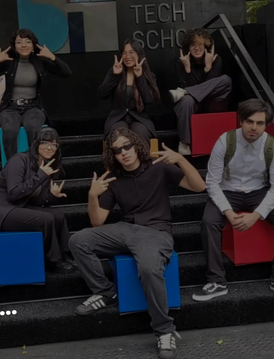
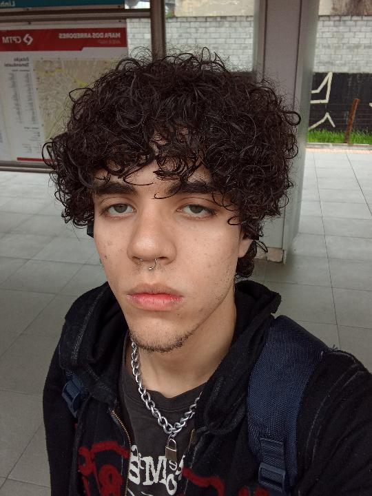
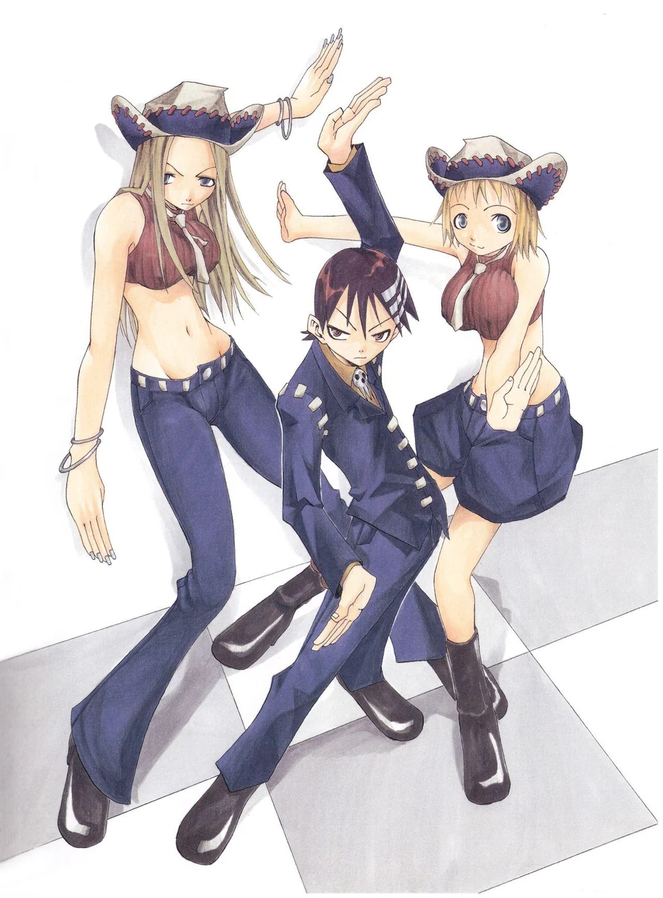
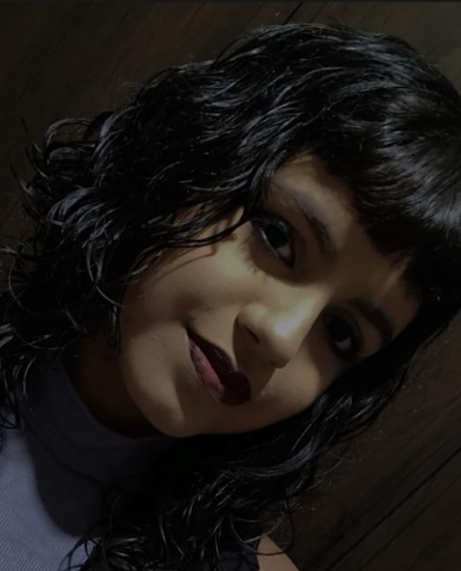
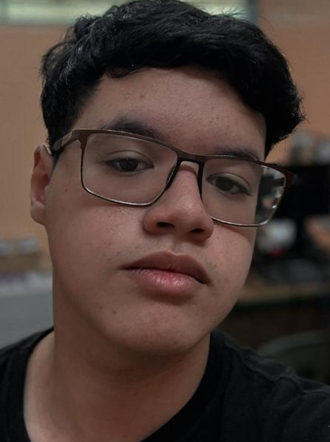
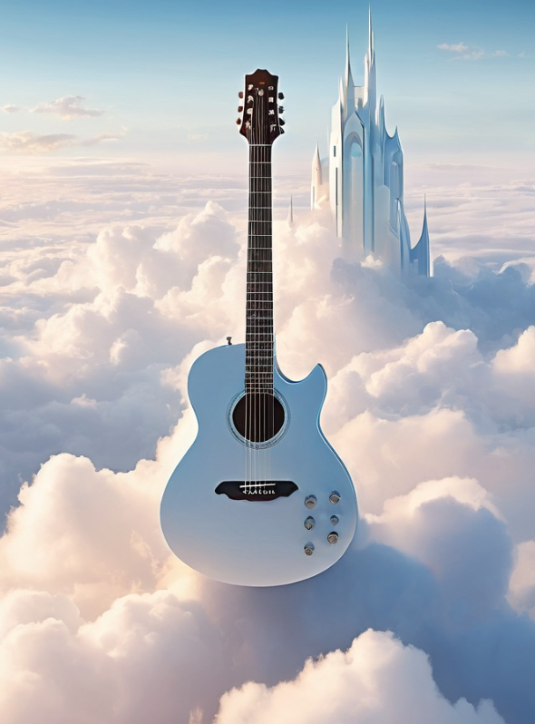

Grupo 6

SPTECH

Hiago


Novamente, Meu nome é Vinicius e sou alguém que sempre se interessou por criatividade, desenvolvimento e construção de projetos com significado. Gosto de aprender coisas novas, trabalhar em equipe e transformar ideias em algo concreto. Este projeto foi desenvolvido como uma forma de unir conhecimentos técnicos com um tema que me marcou pessoalmente, criando algo que representa não apenas uma obra que admiro, mas também aspectos importantes da forma como enxergo o mundo.
Este projeto foi desenvolvido com o objetivo de representar uma obra que teve um impacto significativo na forma como enxergo criatividade, identidade, parceria e evolução pessoal. Escolhi desenvolver meu projeto utilizando como tema Soul Eater porque a obra vai muito além do entretenimento para mim. Ela reúne valores, ideias e características que admiro tanto em pessoas quanto nas coisas que consumo e crio. Este site busca apresentar um pouco desse universo, mas também mostrar a conexão pessoal que construí com ele ao longo do tempo.
Conheci Soul Eater entre os anos de 2023 e 2024 através de um primo meu chamado Hiago, alguém que considero um parceiro, uma referência e uma pessoa muito importante para mim até hoje. Não lembro exatamente qual foi o primeiro episódio ou cena que assisti, mas lembro claramente da impressão que a obra causou. Desde o primeiro contato, fiquei impressionado pela identidade visual, pelos personagens e pela atmosfera única daquele universo. Foi uma daquelas experiências em que você percebe rapidamente que está diante de algo diferente.
A influência de Soul Eater vai além do anime em si. A obra me fez refletir sobre conceitos que considero importantes para minha vida, como identidade, evolução pessoal, criatividade, parceria e equilíbrio. Muitas das características que admiro hoje em projetos, pessoas e equipes estão relacionadas a esses valores. Além disso, procuro aplicar no meu cotidiano a ideia de evolução constante, buscando aprender coisas novas, melhorar minhas habilidades e crescer sem perder minha essência. Também valorizo muito as pessoas que caminham comigo, algo que está diretamente relacionado às mensagens de parceria e companheirismo presentes na obra.
Acredito que cada pessoa deve desenvolver sua própria personalidade, seus próprios valores e sua própria forma de enxergar o mundo. Também acredito que crescer não significa abandonar quem você é, mas evoluir mantendo sua essência.
Acredito que grandes resultados são construídos em conjunto. Gosto de trabalhar em equipe, ouvir opiniões diferentes, trocar ideias e aprender com outras pessoas. No aspecto pessoal, também valorizo muito a amizade, a lealdade e as pessoas que fazem parte da minha trajetória.
A obra apresenta a ideia de que uma alma saudável vive em uma mente saudável e em um corpo saudável. Essa visão reforça algo em que acredito: para evoluir e alcançar objetivos, é necessário cuidar de si mesmo de forma completa.
A jornada da busca constante por aprendizado, crescimento e desenvolvimento pessoal e grupal é algo que procuro levar para minha vida como algo importante, e que também está presente na obra com acompanhamento individual da evolução de cada personagem.




